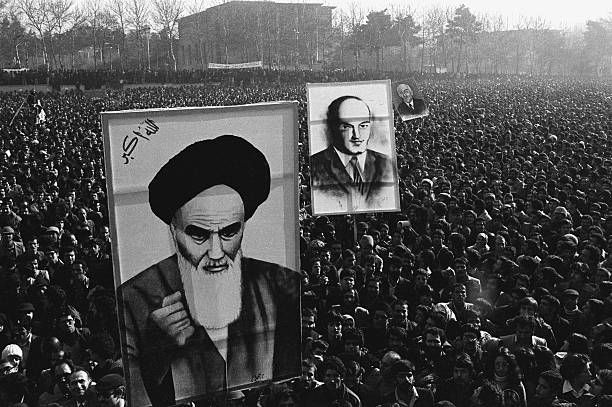

Transformation of the Political System
The most immediate impact of the Iranian Revolution was the abolition of the monarchy and the establishment of the Islamic Republic of Iran in April 1979. The new political system combined elements of republican governance with strong clerical authority.
Under the new constitution, the position of Supreme Leader became the highest authority in the country, holding significant power over military, judiciary, and political institutions. This structure fundamentally altered Iran’s governance model, merging religious leadership with state authority.
Shift in Legal and Social Policies
The revolution brought major changes to Iran’s legal system. Islamic law became central to governance. Policies were introduced affecting family law, education, media, and public conduct.
Dress codes were implemented, and cultural policies emphasized Islamic values. Universities underwent reforms, and Western cultural influences were reduced in many areas of public life.
Impact on Women
The revolution had complex consequences for women in Iran. While women had participated actively in revolutionary protests, the post-revolutionary government introduced new social regulations, including mandatory dress codes.
At the same time, women continued to play important roles in education, healthcare, and professional sectors. Over the decades, debates regarding gender rights and reform have remained central within Iranian society.
Economic Consequences
The revolution disrupted Iran’s economy in the short term. Strikes, political instability, and the departure of foreign companies affected industrial output and oil production.
Later in 1979, the U.S. Embassy hostage crisis led to economic sanctions and diplomatic isolation. These sanctions had long-term effects on Iran’s economy, limiting foreign investment and trade opportunities.
U.S.–Iran Relations
One of the most significant international consequences was the breakdown of relations between Iran and the United States. In November 1979, militants seized the U.S. Embassy in Tehran, holding American diplomats hostage for 444 days.
This crisis led to the severing of diplomatic relations and decades of political tension, sanctions, and mutual distrust that continue into the present.
Regional and Global Influence
The Iranian Revolution reshaped Middle Eastern geopolitics. It inspired political and religious movements in other countries and shifted regional power dynamics.
The revolution also contributed to heightened tensions between Iran and neighboring states, eventually playing a role in the Iran–Iraq War (1980–1988). Globally, it demonstrated how mass mobilization combined with religious leadership could overturn a powerful monarchy.
Energy Politics and Global Markets
As one of the world’s major oil producers, instability in Iran affected global oil markets. Disruptions in production contributed to fluctuations in oil prices and influenced global economic conditions in the late 1970s.
Long-Term Political Identity
More than four decades later, the revolution continues to define Iran’s national identity. Its political institutions, foreign policy orientation, and internal debates about reform and governance are rooted in the revolutionary transformation of 1979.
Impact on Women
- Mandatory dress regulations
- Changes in family and marriage laws
- Shift in workplace participation
- Continued access to education